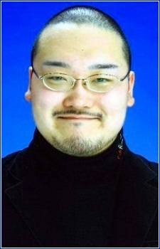
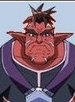

Yasuhiro Mamiya is a Japanese voice actor.
- Gender: Male
- Birthday: December 7, 1981
- Hometown: Chiba, Japan

|  |
Yasuhiro Mamiya is a Japanese voice actor.
|
|---|
|  | Gunenco | Dinosaur King D - Kids | Gunenco is one the Spectral Space Pirates. He is big and tough but dim-witted and impatient. He has a rivalry with Foolscap. |
Go Back to Main Page |
Go Back to Homepage |
|
|
|
OR |
|